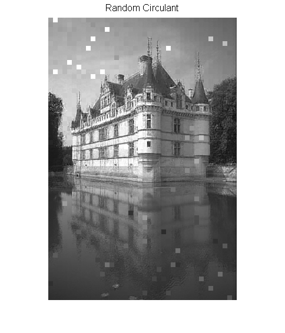
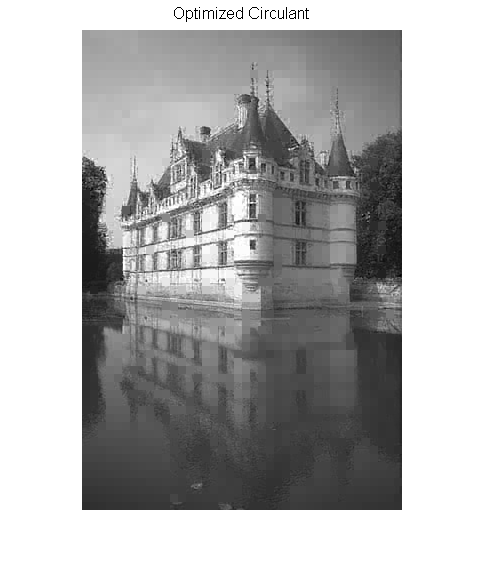

Contents
clear; close all;
rand('state',2013); randn('state',2013);
load LearnedDict;
[n,K] = size(D);
load buildmat
[nr,nc] = size(X);
qr = nr/8;
qc = nc/8;
m = 24;
X_rc = zeros(nr,nc); X_oc = zeros(nr,nc);
generate a random circulant
roM = randn(8);
rM = roM+1i*randn(8); rV = ifft2(rM)/8;
p = randsample(n,m);
[A_rc,C_rc] = TwoDCir_operator(p,rV,D,K);
Learn 2D circulant kernel
Y = zeros(n,K);
for i=1:K
Y(:,i) = reshape(fft2(reshape(D(:,i),8,8))/8,n,1);
end
Ys = Y*Y'; Ys = (Ys+Ys')/2; H = conj(Ys).*Ys; f = diag(Ys);
quadopts = optimset('Algorithm','active-set',...
'Display','off');
u = quadprog(H,-f,[],[],[],[],zeros(n,1),[],[],quadopts);
v = sqrt(u).*exp(2*1i*pi*rand(n,1));
V = reshape(v,8,8);
roV = ifft2(roM)/8;
V = 0.6*V/norm(V,'fro')+0.4*roV/norm(roV,'fro');
[A_oc,C_oc] = TwoDCir_operator(p,V,D,K);
Running solver
for j = 1:qc
for i = 1:qr
x0 = reshape(X(8*(i-1)+1:8*i,8*(j-1)+1:8*j),n,1);
eta = randn(m,1);
xstart = randn(K,1);
b = C_rc(x0);
opts = []; opts.x0 = xstart; opts.tol = 1e-3;
opts.rho = 0.01*max(abs(b))/max(abs(eta));
b = b+0.01*eta*max(abs(b))/max(abs(eta));
theta = yall1(A_rc,b,opts);
x_hat = D*theta;
X_rc((i-1)*8+1:i*8,(j-1)*8+1:j*8) = reshape(x_hat,8,8);
b = C_oc(x0);
opts = []; opts.x0 = xstart; opts.tol = 1e-3;
opts.rho = 0.01*max(abs(b))/max(abs(eta));
b = b+0.01*eta*max(abs(b))/max(abs(eta));
[theta,out] = yall1(A_oc,b,opts);
x_hat = D*theta;
X_oc((i-1)*8+1:i*8,(j-1)*8+1:j*8) = reshape(x_hat,8,8);
end
end
X_rc = real(X_rc); X_oc = real(X_oc);
Reporting
fprintf('Random Circulant: PSNR = %4.2f\n',measerr(X,X_rc,max(X(:))));
fprintf('Optimized Circulant: PSNR = %4.2f\n',measerr(X,X_oc,max(X(:))));
figure;
imshow(X_rc);
title('Random Circulant','fontsize',12);
figure;
imshow(X_oc);
title('Optimized Circulant','fontsize',12);
Random Circulant: PSNR = 25.25
Optimized Circulant: PSNR = 27.09
 